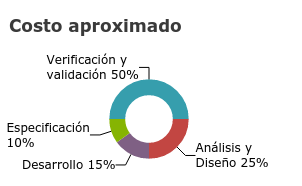

Introducción
Los sistemas críticos son sistemas en los que un fallo significa una pérdida enorme, ya sea económica, ambiental, daño a equipo o herramientas importantes e incluso puede poner en riesgo la vida de una o más personas, por estas razones es importante asegurar la menor cantidad de fallos en el sistema. Para poder analizar un sistema crítico no se pueden usar métodos comunes, se tiene que validar el sistema de tal forma que se pueda eliminar toda duda sobre el funcionamiento del sistema y prevenir la mayor cantidad de errores en los procesos críticos.
En este tipo de sistemas el proceso de validación y verificación es más costoso que en los sistemas no críticos, incluso llega a ser hasta mayor al 50% del total del costo de desarrollo.

Para los desarrolladores hay dos puntos importantes a considerar en el desarrollo de un sistema crítico:
- Las consecuencias de un fallo en un sistema crítico puede afectar gravemente a la economía tanto de quien solicitó el sistema como para quien lo desarrolló; las validaciones de los sistemas críticos representan un gran costo, pero no se compara con el precio de una falla en un sistema crítico.
- Se deben generar pruebas donde se indique que las propiedades importantes de un sistema crítico (fiabilidad, seguridad y protección) fueron validadas y verificadas, pero no se pueden usar pruebas convencionales para demostrarlo.